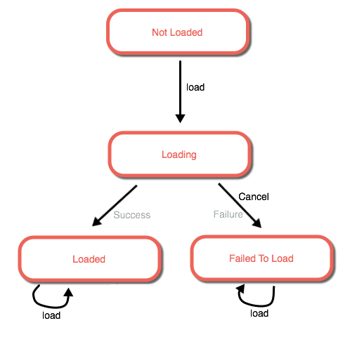

Understanding the loadable pattern
Resources such as layers, maps, portal items, tasks, and so on, commonly rely on remote services or datasets on disk to initialize their state. Accessing such data requires the resources to initialize their state asynchronously. The loadable design pattern unifies this behavior, and resources that adopt this pattern are referred to as "loadable."
Loadable resources handle concurrent and repeated requests to allow sharing the same resource instance among various parts of an application. This pattern permits the cancellation of loading a resource for scenarios such as when the service is slow to respond. Finally, loadable resources provide information about their initialization status through explicit states that can be inspected and monitored.
Loadable API
Classes that conform to the loadable pattern implement the Loadable interface.
Load status
The loadStatus property on loadable classes returns the state of the loadable resource. Four states are possible.
not-loaded— the resource has not been asked to load its metadata and its state isn't properly initialized.loading— the resource is in the process of loading its metadata asynchronously.failed— the resource failed to load its metadata (for example, due to network outage, or the operation was cancelled, and so on.) The error encountered is available from theloadErrorproperty.loaded— the resource successfully loaded its metadata and its state is properly initialized.
The following state transitions represent the stages that a loadable resource goes through.

The Loadable interface includes listeners that make it easy to monitor the status of loadable resources, display progress, and take action when the state changes.
Loading
A resource commences loading its metadata asynchronously when load() is invoked. At that time, the load status changes from not-loaded to loading. When the asynchronous operation completes, the callback is invoked. If the operation encounters an error, the error argument in the callback is populated, and loadStatus is set to failed. If the operation completes successfully, the error argument is null and the load status is set to loaded, which means the resource has finished loading its metadata and is now properly initialized.
Many times, the same resource instance is shared by different parts of the application. For example, a legend component and a table of contents component may have access to the same layer, and they both may want to access the layer's properties to populate their UI. Or the same portal instance may be shared across the application to display the user's items and groups in different parts of the application. load() supports multiple "listeners" to simplify this type of application development. It can be called concurrently and repeatedly, but only one attempt is made to load the metadata. If a load operation is already in progress (loading state) when load() is called, it simply piggy-backs on the outstanding operation and the callback is enqueued to be invoked when that operation completes.
If the operation has already completed (loaded or failed state) when load() is called, the callback is immediately invoked with the past result of the operation, be it success or failure, and the state remains unchanged. This makes it safe to liberally invoke load() on a loadable resource without having to check whether the resource is loaded and without worrying that it will make unnecessary network requests every time.
If a resource has failed to load, calling load() on it subsequently will not change its state. The callback will be invoked immediately with the past load error.
Cancel loading
A resource cancels any outstanding asynchronous operation to load its metadata when cancelLoad() is invoked. This transitions the state from loading to failed. The loadError property will return information that reflects the operation was cancelled.
This method should be used carefully because all enqueued callbacks for that resource instance will get invoked with an error stating that the operation was cancelled. Thus, one component in the application can cancel the load initiated by other components when sharing the same resource instance.
The cancelLoad() method does nothing if the resource is not in the loading state.
Conveniences
Cascading load dependencies
It is common for a loadable resource to depend on loading other loadable resources to properly initialize its state. For example, a portal item cannot finish loading until its parent portal finishes loading. A feature layer cannot be loaded until its associated feature service is first loaded. This situation is referred to as a load dependency.
Loadable operations invoked on any resource transparently cascade through its dependency graph. This helps simplify using loadable resources and puts the responsibility on the resource to correctly establish and manage its load dependencies.
The following code example shows how this cascading behavior leads to concise code. Loading the map causes the portal item to begin loading, which in turn initiates loading its portal. You do not have to load each one of them explicitly.
// create a Map loaded from a webmap
var view = new MapView({
container: "viewDiv"
});
var myPortal = new Portal({
url: "https://myportal/"
});
var webmap = new WebMap({
portalItem: {
// loads as a dependency of WebMap
portal: myPortal,
id: "f2e9b762544945f390ca4ac3671cfa72"
}
});
webmap.load()
.then(function(){
// the webmap successfully loaded
view.map = webmap;
})
.otherwise(function(error){
// the webmap or portal failed to load
console.log("The resource failed to load: ", error);
});
It is possible that dependencies may fail to load. Some dependencies might be critical, such as a portal item's dependency on its portal. If a failure is encountered while loading such a dependency, that error would bubble up to the resource that initiated the load cycle, which would also fail to load. Other load dependencies may be incidental, such as a map's dependency on one of its operational layers, and the resource may be able to load successfully even if one of its dependency fails to load.